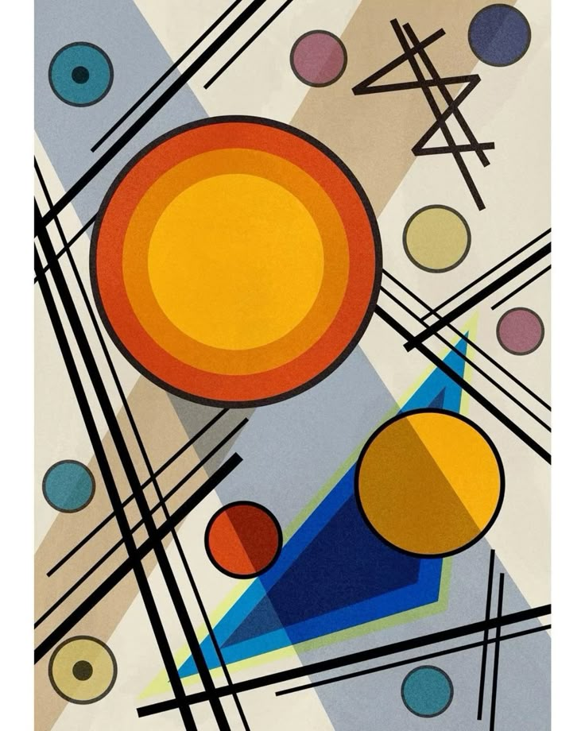

El Lenguaje Visual en el Arte Contemporáneo
El arte contemporáneo utiliza elementos como la composición, el color y la textura para comunicar ideas complejas. Según la teoría de Rudolph Arnheim, la percepción visual es un proceso cognitivo fundamental en la interpretación artística.
Explora técnicas contemporáneas aquí.